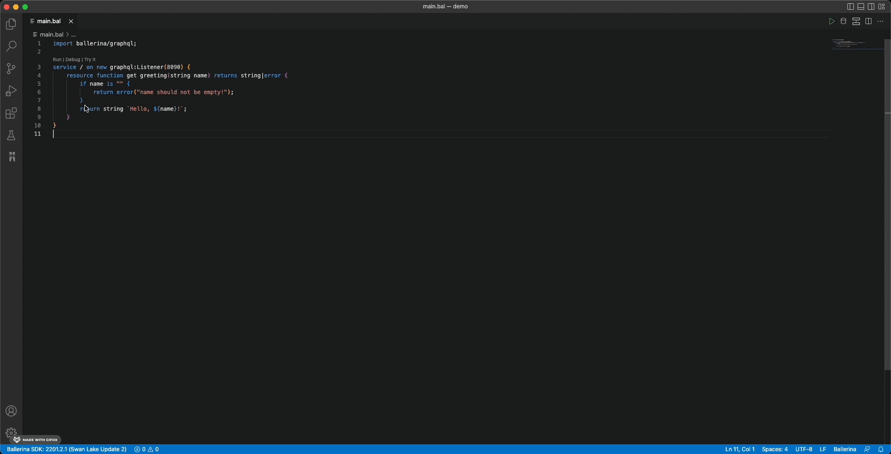
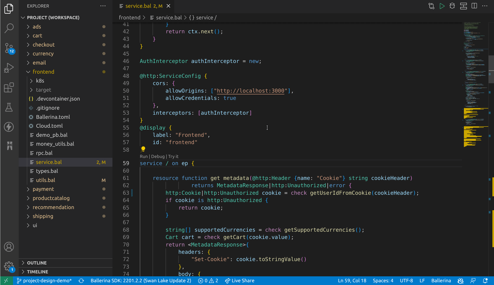

Ballerina VS Code extension (version 3.3.0)
We are happy to announce the Ballerina VS Code extension 3.3.0 release, which has some exciting new features. Following are the highlights of this release.
- Visual Data Mapper - Helps you write and visualize data transformations easily.
- GraphQL Tryit - Facilitates trying out the GraphQL services with the integrated client.
- Record Editor - Provides a better editing experience with suggestions.
- Project Design View - Facilitates visualizing service interactions in your project.
If you are new to Ballerina, you can download the installers to install it. You can install the Ballerina VS Code extension from the VS Code marketplace.
Visual Data Mapper

- A powerful graphical editor, which allows you to easily create complex data transformations in a few minutes.
- Provides descriptive diagnostics, error highlighting, and code actions, which leverage the editing experience.
- An integrated expression editor to add custom values with the support of lang server suggestions, library browsing, etc.
- Currently, supports JSON to JSON transformations and will support more in the future.
GraphQL Tryit

- You can try out the GraphQL services using the
TryitCodeLens. - You can send and test any request with headers to your GraphQL service in VS Code itself without using any third-party tools.
- The GraphQL explorer will help you to explore the available endpoints and generate the query for you.
Record Editor

- The expression editor is now combined with the record editor, which will give a better editing experience with suggestions and library support.
- Now, you can create records by importing a JSON file. All you need to do is select a sample JSON file under the Import a JSON` section in the record creation.
- Record creation using JSON samples now supports separate record creation for complex JSON records.
Project Design View (experimental)

- This release includes an experimental feature that allows you to visualize service interactions in your project.
- It also comes with a view to see record-type compositions and relationships.
- Use the
Ballerina: Project Designcommand to open the design view.